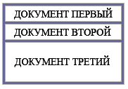

Глава 7
Итак, фреймы.. для чего они нужны и какую пользу в себе несут? Об этом я и постараюсь рассказать в этой главе, ну и естественно о том, как их внедрять и работать с ними..
Часто при создании сайта возникает необходимость открывать в одном окне браузера одновременно несколько HTML документов.. так вот фреймы как раз таки и созданы для того чтобы определить рабочие области для каждого документа. Кроме того, фреймы - это хороший инструмент, с помощью которого можно заниматься версткой страницы, они служат достойной "альтернативой" табличному способу верстки страницы.. в кавычки взял слово "альтернатива" потому, что это совершенно иной способ построения сайта со своими достоинствами и недостатками и его достаточно трудно сопоставлять с доселе привычным построением сайта.. но обо всем по порядку..
Ну что, начнем? Допустим нам необходимо в одном окне браузера открыть сразу три HTML документа и расположить их к примеру вот таким способом:
Что нам для этого нужно? Для начала естественно нам необходимо создать три отдельных html документа которые мы собственно и будем открывать в одном окне.. Пусть первый документ будет нести в себе графическое изображение и будет выполнять роль логотипа назовём его logotype.html , вторым документом будет некое содержание.. назовём menu.html , ну и третьим документ с кучей текста. text.html. Конечно Вы можете придумать свои названия, как впрочем и содержание документов, но пока лучше всё же копируйте мои.. так будет удобнее и мне и Вам.
Итак, есть три файла logotype.html, menu.html и text.html.. которые нам необходимо разместить под одной крышей, а крыши у нас как раз таки ещё пока и нет..
Пишем "крышу", главный документ к которому будем подключать наши файлы. Раз он будет главным, присваиваем ему имя index.html.
Вот привычная для нас структура документа которую мы пережевали ещё в самом начале нашего обучения.. Фреймы ломают сложившиеся стереотипы! Структура фрейм документа имеет вот такой вид:
Отсутствие тега <body> компенсирует новый тег <frameset> - установить фрейм или набор фреймов.. с этим товарищем мы собственно и будем работать дальше.
Тег <frameset> имеет атрибуты rows и cols - эти атрибуты указывают браузеру на то, как следует размещать фреймы в окне браузера
rows - горизонтально cols - вертикальноВ нашем случае нам необходимо горизонтальное размещение фреймов.. значит пишем так:
Проценты после знака равенства - это не что иное, как размеры наших окошек- фреймов в одном большом окне браузера, у нас предполагается размещение трёх окон - следовательно и значений через запятую тоже три. Вспомните как мы задавали размеры ячеек для таблицы, здесь тот же принцип.. Как и в случае с ячейками таблицы, размеры фреймов можно указывать в процентах от общей площади и в пикселях.
Вот несколько примеров написания:
<frameset rows="15%,15%,70%"> - такая запись говорит о том, что будет три горизонтальных окошка где последнее займет 70% площади окна браузера, а первые два по 15%.
<frameset cols ="200,240,200"> - здесь три окна расположены вертикально ширина которых указана в пикселях.
<frameset rows="100,*,180"> - такая запись значит, что первое и третье окно будут иметь ширину 100 и 180 пикселей соответственно, а второй фрейм займет всю оставшеюся площадь.
С размещением документов покончили, теперь собственно осталось их подключить и насладится первым результатом..
Тег <frame> и его атрибут src укажет браузеру путь к html документу который следует открыть в отведенном для него месте. У нас имеется три отдельных документа logotype.html, menu.html и text.html теперь к каждому нужно прописать путь, что мы собственно и делаем. (предполагаю, что у Вас все четыре файла находятся в одной папке и пути к ним имеют самую простую запись по типу: <frame src="logotype.html">)
Пример:
В данном примере я выложил все четыре HTML документа где index.html является основным, а остальные три, это подключаемые страницы, каждая из которых в принципе может работать автономно и содержать в себе всё что угодно картинки, таблицы, тексты, ссылки.. сделал я это для того что бы дать Вам понять принцип работы с фреймами. В дальнейших примерах я буду выкладывать лишь головной файл с фреймами, (а то уж больно много места на странице они все вместе занимают), а Вы знайте что у меня "где то там" есть все остальные файлы содержащие в себе графику, тексты, может быть ещё что ни будь.. ну и не отставайте за мной потихоньку редактируйте свои собственные странички к будущему тренировочному сайту.. Не знаю про что Вы будите писать свой, а я тут пообещался помочь одной девушке в написании сайта посвящённого кулинарии..)) так что решил так сказать сразу на двух зайцев замахнуться.. на девушку зайку и сайт..)) как-то так..))
В выше изложенном примере мы расположили все окна горизонтально, поменяв атрибут rows на cols можно расположить их в вертикальном порядке. А как быть, если требуется разместить наши окна
Выход есть. Разберём на примерах.
Начнём с первого случая.. что мы видим? А видим мы две строки, где вторая поделена на два столбца.
A теперь по порядку:
<frameset rows="20%,80%"> - делим окно браузера на две строкиВообще то говорить столбцы и строки неверно, так как фреймы никакого отношения к таблицам не имеют кроме как визуального подобия, правильно говорить горизонтальные и вертикальные фреймы.. ну это я так изрекаюсь что б Вам понятнее было..
Ну да ладно, смотрим пример:
Во втором случае у нас имеется два столбца в котором второй поделен на две строки, значит будем писать так:
<frameset cols="30%,70%"> - делим окно на два столбцаПример:
Третий случай немного посложней, но бояться его не стоит.. тем более что именно такое построение лично я выбрал для сайта про кулинарное искусство, чуть ниже объясню почему. Что мы имеем? три столбца причем во второй столбец по сути заключён наш первый случай..
<frameset cols="*,800,*"> - делим окно на три столбика (обратите внимание второй столбец занимает ровно 800 пикселей а два крайних точного размера не имеют и поделят пополам оставшееся место)Посмотрите пример, а потом я объясню почему избрал путь с пятью окнами
Пример:
Так почему пять окон? Помнится мне, я уже писал про то, что у разных пользователей сети Интернет на мониторах выставлены разные разрешения и соответственно на разных экранах наш сайт будет выглядеть по разному.. и если нет конкретных размеров все наши рисунки, тексты, таблицы что называется "поплывут" у тех пользователей, разрешения мониторов которых отлично от Вашего. Когда мы верстали сайт с помощью таблицы, вопрос с размерами страницы решался при помощи присуждения этой таблице конкретной ширины и высоты, к сожалению, с фреймами так поступить нельзя.. даже если указывать ширину фреймов не в процентах, а в пикселях, всё равно последний столбец растянется на оставшеюся ширину окна браузера и страница, что называется, потеряет "товарный вид". Так как же быть? Приходится идти на маленькие хитрости.. Задав центральному столбцу (в котором у нас собственно и размещена вся страница) размер 800 пикселей мы раз и навсегда определи его ширину, а безразмерные первый и третий столбцы помимо декора выполняют роль своего рода "пружин" на которых подвешен центральный столбец.. Так, у людей с маленьким разрешением монитора эти окна/поля будут узкими, а людей с большим разрешением широкими, таким образом центральный столбец никак не пострадает и теперь мы можем с полной уверенностью размещать в нём какие либо объекты, с точной привязкой по месту, не переживая за их дальнейшую судьбу. Сравните первый пример, где три окна и третий, где их уже пять, неправда ли так лучше?
На этом с размещением и размерами фреймов закончим.. и так здесь долго задержались.. идём дальше.
В последнем нашем примере первое, что бросается в глаза, это целая куча полос прокруток, которые стоят где надо и не надо.. Давайте от них избавимся, ну можно и оставить кое где.. Делается это при помощи атрибута scrolling - тега <frame>, он может иметь одно из трёх значений:
Пример:
Поля фреймов или иначе расстояние от границ фрейма до текста или картинки, как в нашем случае, задаются в пикселях при помощи атрибутов marginwidth и marginheight тега <frame>
Пример:
Поговорим немного о рамках вокруг наших фреймов.
Если Вы обратили внимание, то в последнем примере наведя курсор на границу фрейма он, курсор то бишь, приобретает другой вид (захватить и переместить) и теперь эту границу можно перетащить в какую либо сторону удерживая левой кнопкой мыши. Иногда такая "мобильность" границ фреймов играет на руку веб-мастеру, но чаще всё же мешает.. Для того, чтобы запретить пользователю играться с размерами окон для тега <frame> придумали атрибут noresize
Пример:
А вот давно нам знакомый атрибут border задаёт ширину в пикселях этих самых рамок между фрёймами.. пишется он внутри тега <frameset>. Как и раньше значение border="0" вовсе избавит нас от рамок.
Пример:
Настало время оживить наш сайт ссылками, да вот беда, знакомая нам обыкновенная ссылка <a href="text1.html">Бобы в горшочке по-итальянски</a> откроет данный документ в том же фрейме где она и находится, в нашем случае непосредственно в фрейме с содержанием, а само содержание в момент перехода по этой ссылки уйдёт в небытие.. можете взглянуть на корявый пример.. кликнете в нём на любую ссылку.. Что бы впредь такого не происходило, необходимо указывать браузеру в каком фрейме следует открывать необходимый нам документ, ну если конечно Вам и в правду не нужно открывать его в этом же фрейме.
Помнится мы уже знакомились, в главе посвящённой ссылкам, с атрибутами name- имя и target- цель, применяются они также и при работе с фреймами механизм немного изменён а так почти тоже самое. первым делом фрейму в котором мы хотели бы открывать какие либо документы необходимо присвоить индивидуальное имя.
пишется так:
<frame src="text.html" name="osnovnoe"> имя можно придумать любое.. главное его не забыть..А теперь в документе с ссылками (в нашем случае это файл menu.html)необходимо указать цель то есть собственно определить в каком окне стоит открывать тот или иной документ
Пишется так:
<a href="text1.html" target="osnovnoe">Бобы в горшочке по-итальянски</a>Ну я думаю Вам уже не стоит объяснять, что прежде чем ссылаться на какие либо документы, их необходимо создать.. в моём случае файлы (рецепты) имеют имена text.html, text1.html, text2.html…
Посмотрите пример:
Так же как и раньше документ можно открыть в отдельном окне. Напомню, пишется так:
<a href="text1.html" target="_blank">Бобы в горшочке по-итальянски</a>Или же присвоив атрибуту target значение _top открыть его в этом же окне браузера, но на весь экран.. "обнулив" при этом всё что бы там не находилось.. пишется так:
<a href="text1.html" target="_top">Бобы в горшочке по-итальянски</a>Такой вот сайтик получился.. конечно над ним ещё работать и работать.. к тому же по моёй задумке он будет иметь несколько иную структуру в плане навигации по сайту, в нем будет ёщё целая куча страниц, красивое меню, но что касается фреймовой структуры, думаю она останется прежней..
Иногда в страницу содержащую в себе не фреймовую структуру необходимо в отдельном окне вставить другой HTML документ или даже ряд таковых документов. Для выполнения этой цели существует тег <iframe> - так называемый плавающий фрейм.
Данный тег имеет ряд атрибутов:
src - обязательный атрибут, указывающий путь к открываемой страницеВсё вместе пишется так:
<iframe src="primer.html" width="300" height="250" align ="left" scrolling="auto" frameborder="1" ></iframe>Пример документа с плавающим фреймом:
Некоторые браузеры не поддерживают фреймовую структуру документа или неправильно её интерпретируют, кроме того зачастую пользователи в настройках своих браузеров умышленно отключают поддержку фреймовой структуры html документа. И хотя процент таких браузеров и пользователей невелик, но тем не менее они есть.
Теперь представьте что Вы построили свой сайт с помощью фреймовой структуры и вот некоторые посетители, может быть сами не подозревая в чем проблема, пытаются открыть Ваш сайт, а их браузер выдает ошибку! Что они подумают о Вашем сайте? я думаю, что то типа: "Фу.. ерунда какая то.. больше сроду сюда не зайду!".
Для того что бы дать понять пользователю, что его браузер/настройки браузера не поддерживают фреймы существует тег <noframes>.
Тег <noframes> выводит текст, заключенный в него в том случае, если браузер пользователя не поддерживает фреймы или они принудительно выключены в его настройках. Если же фреймы поддерживаются браузером пользователя, то данный тег попросту игнорируется.
Пример:
Результат примера будет заметен, если Ваш браузер и в правду не поддерживает фреймы (тут я надолго задумался.. :) если это так, то зачем вообще читать эту главу?) или же Вы в качестве эксперимента выключили поддержку фреймов в своём браузере.
Тег <noframes> должен быть расположен внутри тега <frameset>
С плавающим фреймом всё ещё более просто, достаточно написать нужный текст между <iframe> </iframe> и данная надпись будет выводится на экран, в том случае если браузер не поддерживает фреймы.
Вот так:
<iframe src="primer.html" width="300" height="250" align ="left" scrolling="auto" frameborder="1">Извините, но Ваш браузер не поддерживает фреймы..</iframe>Перед тем как начать создавать страницу с использованием фрёймовой структуры проанализируйте её макет, размеры каждого окна, наличие или отсутствие в них полос прокруток и т. д. После этого можно создавать подключаемые HTML файлы особо не переживая за их взаимное расположение относительно друг друга..
Используйте тег <noframes>. Помните что если в Вашем браузере сайт работает и отображается так как Вы и задумывали то у других пользователей дела могут обстоять иначе!